실내건축기능사 (2004-04-04 기출문제)
1과목: 실내디자인
1. 현대건축의 형성에 가장 큰 영향을 끼친 독일의 디자인 학교인 바우하우스의 창시자는?
- 윌리암 모리스(William Morris)
- 브로이어(Breuer)
- 그로피우스(Gropius)
- 루이스 설리반(Louis Sullivan)
(정답률: 59%)

2. 실내디자인에 있어서 조화(harmony)의 설명으로 가장 옳게 설명된 것은?
- 조화란 둘 이상의 요소, 선, 면, 형태, 공간 등의 서로 다른 성질의 한 공간 내에서 결합될 때 미적현상을 발생시킨다.
- 조화란 동일요소의 결합으로 생동감이 있다.
- 전혀 다른 성질의 요소들을 동시공간에 배열하는 것이다.
- 물체와 인간과의 상호관계를 의미한다.
(정답률: 76%)
3. 다음 중 침대의 배치가 가장 잘 된 것은?
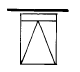
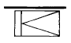
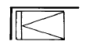
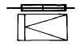
(정답률: 49%)
4. 실내디자인의 목표와 가장 관계가 먼 것은?
- 쾌적성 추구
- 물리적, 환경적조건 해결
- 예술적, 서정적욕구 해결
- 개성적인 디자인
(정답률: 69%)
5. 주거공간에서 실의 인접이 잘못된 것은?
- 식당· 거실
- 부엌· 식당
- 침실· 서재
- 노인 침실· 어린이 침실
(정답률: 70%)
6. 가구와 설치물의 배치 결정시 가장 먼저 고려되어야 할 사항은?
- 재질감
- 색채감
- 스타일
- 기능성
(정답률: 97%)
7. 디자인원리에서 가까운 두점간에 생기는 느낌은?
- 공간의 연속성
- 시간의 확대
- 시각적인 착시
- 장력의 발생
(정답률: 34%)
8. 채광의 효과가 가장 좋은 창의 종류는?
- 천창
- 측창
- 정측창
- 고측창
(정답률: 83%)
9. 같은 층에서 높이 차를 두는 바닥에 관한 설명으로 옳지 않은 것은?
- 칸막이 없이 공간 구분을 할 수 있다.
- 심리적인 구분감과 변화감을 준다.
- 안전에 유념해야 한다.
- 연속성을 주어 실내를 더 넓어 보이게 한다.
(정답률: 86%)
10. 실내디자인의 대상 중 교육공간에 속하는 것은?
- 독립주택
- 호텔
- 박물관
- 유치원
(정답률: 86%)
11. 선의 설명 중 틀린 것은?
- 점의 집합체
- 상대적인 존재
- 점의 운동 궤적
- 방향에 따른 감각의 차이가 없음
(정답률: 78%)
12. 다음 중 황금비로 옳은 것은?
- 1 : 0.618
- 1 : 618
- 1 : 1.618
- 1 : 1.816
(정답률: 87%)
13. 주거공간 실내계획시 고려사항으로 가장 거리가 먼 것은?
- 기후
- 위치
- 디자인 스타일
- 주변 도로폭
(정답률: 67%)
14. 공간을 형성하는 수평적 요소로서 그 형태에 따라 실내 공간의 음향에 가장 큰 영향을 미치는 것은?
- 천장
- 벽
- 바닥
- 기둥
(정답률: 61%)
15. 상업 공간의 동선 계획으로 틀린 것은?
- 종업원 동선은 고객 동선과 교차되지 않도록 한다.
- 종업원 동선은 동선 길이를 짧게 한다.
- 고객 동선은 행동의 흐름이 막힘이 없도록 입체적으로 한다.
- 고객 동선은 동선 길이를 될 수 있는 대로 짧게 한다.
(정답률: 92%)
16. 다음 중 열전도율의 단위는?
- kcal
- kg/m3
- W/m2· hr
- kcal/m·h·℃
(정답률: 39%)
17. 잔향시간의 설명으로 옳지 않은 것은?
- 최초값 보다 60dB 감소하는데 걸리는 시간이다.
- 잔향시간이 길면 말소리를 듣기 어렵다.
- 잔향시간이 없으면 음량이 커진다.
- 잔향시간은 실의 부피에 따라 결정된다.
(정답률: 52%)
18. 쾌적 환경 기후의 상태를 나타내는 열 환경의 4요소 중기후적인 조건을 좌우하는 가장 큰 요소는?
- 습도
- 주위 벽의 복사열
- 기류
- 공기의 온도
(정답률: 52%)
19. 실내의 표면결로 방지법으로 옳지 않은 것은?
- 각부의 열관류 저항을 많게 한다.
- 적당한 환기를 시킨다.
- 실내에서 수증기량의 발생을 많게 한다.
- 각부의 열관류량을 적게 한다.
(정답률: 84%)
20. 인간의 건강과 가장 깊은 관계가 있는 광선은?
- 자외선
- 적외선
- 가시광선
- X-ray선
(정답률: 84%)
2과목: 실내환경
21. 콘크리트용 골재에 요구되는 성질로 맞지 않는 것은?
- 골재의 강도는 콘크리트 중의 경화시멘트 페이스트의 강도 이상일 것.
- 골재의 입형은 편평, 세장하고, 표면은 거칠지 않을 것.
- 입도는 조립에서 세립까지 연속적으로 균등히 혼합되어 있을 것.
- 유해량의 먼지, 흙, 유기불순물 등을 포함하지 않을 것.
(정답률: 61%)
22. 다음 중 석재에 대한 설명으로 틀린 것은?
- 압축강도는 인장강도의 약 1/20~1/40 정도이다.
- 외관은 장중한 맛이 있고, 치밀한 것은 갈면 아름다운 광택이 난다.
- 거의 모든 석재가 비중이 크고 가공성이 불량하다.
- 화열에 닿으면 화강암은 균열이 생기며 파괴된다.
(정답률: 57%)
23. 다음 중 열가소성 수지에 속하지 않는 것은?
- 멜라민 수지
- 아크릴 수지
- 염화비닐 수지
- 폴리에틸렌 수지
(정답률: 52%)
24. 다음 중 점토제품이 아닌 것은?
- 테라조(terrazzo)
- 테라코타(terra cotta)
- 타일(tile)
- 내화벽돌
(정답률: 36%)
25. 석고 플라스터에 대한 설명으로 틀린 것은?
- 약산성이므로 유성페인트 마감을 할 수 있다.
- 소석고 플라스터는 경화와 건조가 느리다.
- 경화ㆍ 건조시 치수안정성과 내화성이 뛰어나다.
- 수화하여 굳어지므로 내부까지 거의 동일한 경도가 된다.
(정답률: 43%)
26. 석회암이 변화되어 결정화한 것으로 치밀, 견고하고 색채와 반점이 아름다워 실내장식재, 조각재로 사용되는 석재는?
- 화강석
- 안산암
- 대리석
- 응회암
(정답률: 87%)
27. 다음 중 콘크리트의 응결 및 경화를 촉진시키는 혼화제로 주로 사용되는 것은?
- 플라이애시
- 염화칼슘
- AE제
- 산화철
(정답률: 29%)
28. 다음은 목재에 대한 설명이다. 옳지 않은 것은?
- 목재의 진비중은 수종에 관계없이 1.54 정도로 거의 같다.
- 섬유포화점은 함수율 30%정도이다.
- 가구재의 함수율은 10%이하로 하는 것이 바람직하다.
- 목재는 휨재로 쓸 때 가장 유리하다.
(정답률: 49%)
29. 수성페인트에 대한 설명이다. 잘못된 것은?
- 속건성이어서 작업의 단축이 가능하다.
- 내수, 내후성이 좋아서 햇볕, 빗물에 강하다.
- 알칼리에 약하기 때문에 콘크리트면에 사용할 수 없다.
- 용제형 도료에 비해 냄새가 없어 안전하고 위생적이다.
(정답률: 50%)
30. 목재이음부의 긴결시 목재와 목재 사이에 끼워서 전단에 대한 저항을 목적으로 한 철물은?
- 감잡이쇠
- 클램프
- 듀벨
- 꺾쇠
(정답률: 65%)
3과목: 실내건축재료
31. 합성수지에 대한 설명으로 옳지 않은 것은?
- 가소성, 가공성이 크므로 기구류, 판류, 파이프 등의 성형품 등에 많이 쓰인다.
- 접착성이 크고 기밀성, 안정성이 큰 것이 많으므로 접착제, 실링제 등에 적합하다.
- 마모가 적고 탄력성이 크므로 바닥재료 등에 적합하다.
- 강성이 크고 탄성계수가 강재의 2배이므로 구조재료로 적합하다.
(정답률: 46%)
32. 집성목재에 대한 설명으로 옳지 않은 것은?
- 보와 기둥에 사용할 수 있는 단면을 가진 것도 있다.
- 목재의 강도를 인공적으로 자유롭게 조절할 수 있다.
- 응력에 따라 필요한 단면을 만들 수 있다.
- 아치와 같은 굽은 부재는 만들지 못한다.
(정답률: 69%)
33. 석재를 인력으로 가공할 때 표면이 가장 거친 것에서 고운 것으로 바르게 나열한 것은?
- 혹두기→ 도드락다듬→ 정다듬→ 잔다듬→ 물갈기
- 혹두기→ 정다듬→ 잔다듬→ 도드락다듬→ 물갈기
- 정다듬→ 혹두기→ 도드락다듬→ 잔다듬→ 물갈기
- 혹두기→ 정다듬→ 도드락다듬→ 잔다듬→ 물갈기
(정답률: 80%)
34. 다음 그림은 골재의 함수상태를 나타낸 것이다. 유효흡수량은 ? (좌측 그림부터 절대건조상태, 기건상태, 표면건조포수상태, 습윤상태를 나타냄)
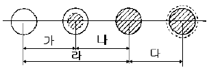
- 가
- 나
- 다
- 라
(정답률: 43%)
35. 2장 또는 3장의 유리를 일정한 간격을 두고 둘레는 틀을 끼워 내부를 기밀하게 만들고 여기에 건조공기를 넣거나 진공 또는 특수가스를 넣은 것으로 방음, 방서, 단열효과가 크고 결로방지용으로도 우수한 유리제품은?
- 복층유리
- 망입유리
- 배강도유리
- 반사유리
(정답률: 89%)
36. 용융하기 어렵고 약품에 침식되지 않으며 일반적으로 투명도가 큰 것으로, 고급용품, 공예품, 장식품 등에 사용되는 유리는?
- 소다유리
- 칼륨석회유리
- 고규산유리
- 칼륨납유리
(정답률: 40%)
37. AE제를 콘크리트에 사용했을때의 효과에 대한 설명으로 가장 옳지 못한 것은?
- 수밀성이 개량된다.
- 압축강도가 증가된다.
- 작업성이 좋게 된다.
- 동결융해에 대한 저항성이 증대된다.
(정답률: 49%)
38. 고로시멘트에 대한 설명으로 옳은 것은?
- 수화열량이 크다.
- 매스콘크리트용으로 사용할 수 있다.
- 경화건조수축이 없으며 풍화가 어렵다.
- 단기강도가 크고 장기 강도가 낮다.
(정답률: 32%)
39. 변성암 계열의 석재가 아닌 것은?
- 대리석
- 트래버틴
- 석면
- 부석
(정답률: 57%)
40. 바닥재료가 가지고 있어야 하는 성질로 가장 옳지 않은 것은?
- 청소가 용이해야한다.
- 탄력이 있고 마모가 적어야 한다.
- 내구ㆍ 내화성이 큰 것이어야 한다.
- 열전도율이 큰 것이어야 한다.
(정답률: 78%)
41. 스케일(Scale)의 삼각면에 표시되어 있지 않는 축척은?
- 1/100
- 1/200
- 1/300
- 1/700
(정답률: 62%)
42. 재료표시기호에서 목재의 구조재 표시 기호는?
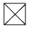
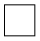
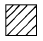
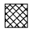
(정답률: 57%)
43. 부재응력 중 부재를 직각으로 자를 때 생기는 응력은?
- 인장응력
- 압축응력
- 전단응력
- 휨모멘트
(정답률: 65%)
44. 벽돌구조의 벽체에 관한 설명 중 옳은 것은?
- 개구부의 상하간 수직거리는 30cm 이상으로 한다.
- 개구부가 1.8m 이상의 폭일 경우 상부에 철근콘크리트 인방보를 설치한다.
- 벽돌벽에 배관과 배선을 위해 홈을 설치할 경우 가로 홈은 그 길이를 4m 이하로 하고 깊이는 벽두께의 1/5 이하로 한다.
- 개구부 상호간 또는 개구부와 대린벽 중심과의 수평거리는 벽두께의 1.5배이상으로 한다.
(정답률: 42%)
45. 지붕의 평면과 지붕명칭의 연결 중 옳지 않은 것은?
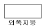
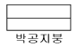
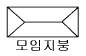
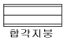
(정답률: 53%)
46. 연약지반에서의 부동침하 방지책으로 옳지 않은 것은?
- 건물을 경량화한다.
- 건물의 중량을 평균화한다.
- 지하실을 강성체로 설치한다.
- 이웃 건물과의 거리를 가깝게 한다.
(정답률: 87%)
47. 다음 평면표시기호는 무엇을 의미하는가?
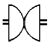
- 자재여닫이문
- 쌍미닫이문
- 회전문
- 외여닫이문
(정답률: 72%)
48. 한 켜는 길이쌓기로 하고 다음은 마구리쌓기로 하며 모서리 또는 끝에서 칠오토막을 사용하는 벽돌 쌓기법은?
- 영국식 쌓기
- 미국식 쌓기
- 엇모 쌓기
- 네덜란드식 쌓기
(정답률: 72%)
49. 일체식 구조 중 하나로, 내구성, 내화성, 내진성이 우수하지만, 자중이 무겁고 시공 과정이 복잡하며 공사기간이 긴 단점이 있는 구조는?
- 벽돌구조
- 목구조
- 철근콘크리트구조
- 블록구조
(정답률: 85%)
50. 철근콘크리트조의 보에 대한 설명 중 옳지 않은 것은?
- 일반적으로 정사각형보가 가장 널리 쓰인다.
- 단순보인 경우 하중이 아래로 작용하면, 휨모멘트에 의해 보의 중앙부에서는 아래쪽에 인장력이 생긴다.
- 구조내력상 중요한 보는 복근보로 하는 것이 좋다.
- 정도를 넘는 전단력에 대해서는 늑근을 배치하여 보강한다.
(정답률: 34%)
4과목: 건축일반
51. 철골구조의 판보에서 커버 플레이트의 장수는 최대 몇 장 이하로 하는가?
- 1장
- 2장
- 3장
- 4장
(정답률: 36%)
52. 연속기초라고도 하며 조적조의 벽기초 또는 철근콘크리트조 연결기초로 사용되는 것은?
- 독립기초
- 복합기초
- 온통기초
- 줄기초
(정답률: 60%)
53. 평면도를 그릴 때 절단높이를 바닥판에서 1.2∼1.5m정도로 가정한다. 그 이유에 대한 설명으로 가장 옳지 않은 것은?
- 벽체의 두께를 잘 나타낼 수 있다.
- 각종 개구부의 위치나 형태를 잘 나타낼 수 있다.
- 건물의 외부가 잘 표현될 수 있다.
- 인간의 생활 공간 중에서 실생활과 가장 관련이 높다.
(정답률: 59%)
54. 도면표시기호 중 두께를 표시하는 기호는?
- THK
- A
- V
- H
(정답률: 90%)
55. 표준형 점토벽돌 2.0B의 두께는?
- 190mm
- 290mm
- 390mm
- 490mm
(정답률: 70%)
56. 곡면판이 지니는 역학적 특성을 응용한 구조로서 외력은 주로 판의 면내력으로 전달되기 때문에 경량이고 내력이 큰 구조물을 구성할 수 있는 구조는?
- 현수구조
- 입체격자구조
- 철골구조
- 셸구조
(정답률: 59%)
57. 철근콘크리트조에서 단변(ℓx)과 장변(ℓy)의 길이의 비 (
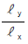
)가 얼마 이하일때 2방향 슬래브(slab)라 하는가?- 1
- 2
- 3
- 4
(정답률: 75%)
58. 철골기둥의 주각의 구성재가 아닌 것은?
- 윙플레이트
- 베이스플레이트
- 클립앵글
- 스티프너
(정답률: 45%)
59. 다음 나무구조에 대한 설명 중 옳지 않은 것은?
- 목재를 접합하여 건물의 뼈대를 구성하는 구조이다.
- 저층의 주택과 같이 비교적 소규모 건축물에 적합하다.
- 목재는 가볍고 가공성이 좋으며 친화감이 있다.
- 목재는 열전도율이 커서 연소하기 쉽다.
(정답률: 67%)
60. 제도의 문자 쓰기에 대한 설명 중에서 부적당한 것은?
- 숫자는 아라비아 숫자를 원칙으로 한다.
- 글자체는 수직 또는 15° 경사의 고딕체로 쓰는 것을 원칙으로 한다.
- 문장은 세로쓰기를 원칙으로 하며, 세로쓰기가 곤란할 때에는 가로쓰기도 할 수 있다.
- 글자의 크기는 각 도면의 상황에 맞추어 알아보기 쉬운 크기로 한다.
(정답률: 70%)